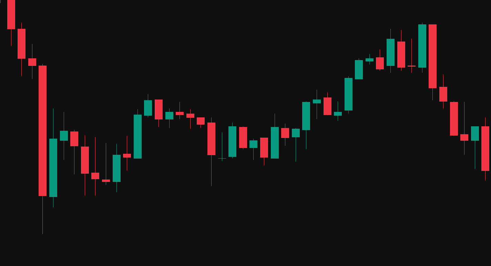

Это предпросмотр. Проверка ID, депозита и анализ будут доступны после подключения Cloudflare Workers.
Меньше догадок.
Больше ясности.
Загрузите скриншот графика, выберите актив и экспирацию. BLUFIN+ разберёт видимую ситуацию и покажет возможное направление.

PROFIT +$1,280PROFIT +$740PROFIT +$2,360Подойдёт читаемый скриншот с видимым активом и таймфреймом.
Укажите актив и экспирацию: 1, 3, 5 или 15 минут.
Сценарий вверх или вниз по загруженному графику.
Подключите
свой аккаунт
Для доступа нужен аккаунт Binodex, зарегистрированный по ссылке BLUFIN+. Если вы уже зарегистрировались, введите свой ID.
После регистрации вернитесь сюда и введите ID. Подтверждение может прийти с задержкой.
Почти готово.
Активируйте доступ.
Пополните баланс Binodex на сумму от $10. Как только партнёрская система подтвердит депозит, доступ к анализу откроется автоматически.
Вход владельца
Введите личный код доступа. Он хранится только в настройках сервера и на вашем компьютере.
Панель BLUFIN+
Данные сервера. Суммы депозитов здесь не отображаются.
Новый анализ.
Только информация, которую можно увидеть на вашем скриншоте.
Разбор графика
- Тренд
- Таймфрейм
- Уровни
- Сетап
- Отмена сценария
- Ограничения